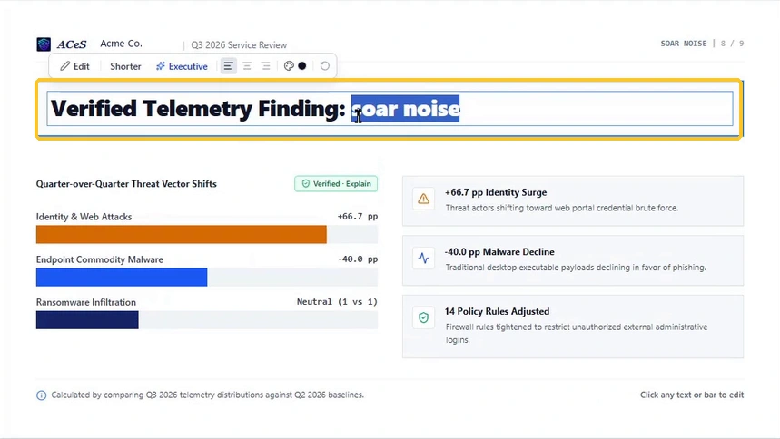
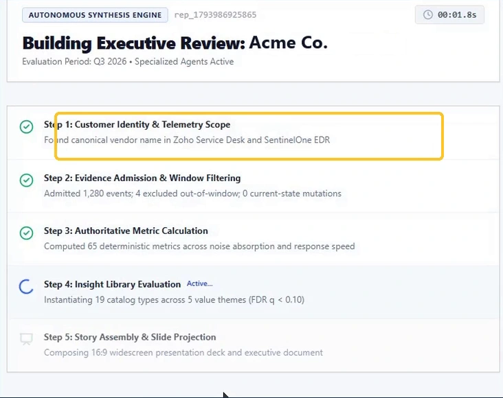
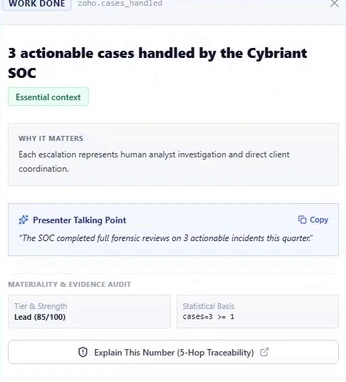
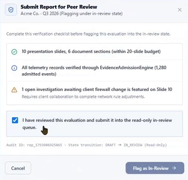

Collect within scope
Read-only agents pull Zoho Analytics and SentinelOne records for one customer and reporting window.
Cyber Security Agentic Customer Success
ACeS turns service desk tickets and endpoint activity into a quarterly review. Customer success teams can trace each metric to its source, edit the draft, and approve it for export.
Explore the Acme Co. demo
Read-only agents pull Zoho Analytics and SentinelOne records for one customer and reporting window.
ACeS validates the records and keeps each metric tied to its calculation and supporting evidence.
Reviewers refine the narrative, check the figures, and finalize the report for PowerPoint or PDF export.
Q3 2026 · Synthetic data
Follow a quarterly review from the first data pull through the peer-review checklist. Select a screenshot to enlarge it.

Watch ACeS scope the request, validate the records, and calculate the metrics.
Revise the headline while the chart values stay tied to the calculated facts.

Open a finding and use Explain This Number to follow the metric back to its inputs.

Confirm the checklist before sending the draft to a reviewer for approval.
Screenshots from the 7371-UC ACeS Flash Showcase.
Kennesaw State University · Fall 2026
We built ACeS for our CS 4850 senior project with industry sponsor Cybriant and instructor Sharron Perry.
Zoho integration
Built the Zoho Analytics agent and worked on customer discovery, report generation, and agent activity tracing.
Reviewer workspace
Built the slide and document editors, insights library, and the review and export workflow.
Cloud deployment and security
Containerized the services for Cloud Run and implemented perimeter authentication and per-agent workload identities.
Orchestration and report synthesis
Led system design and orchestration and built features for SentinelOne data, metric traceability, and report generation.